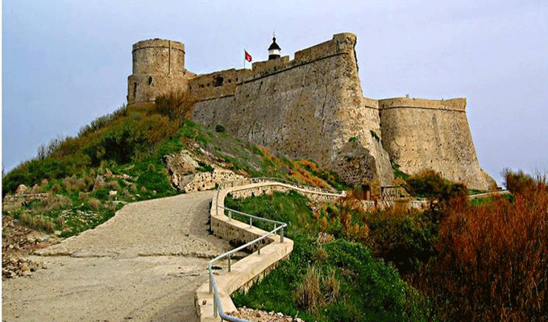
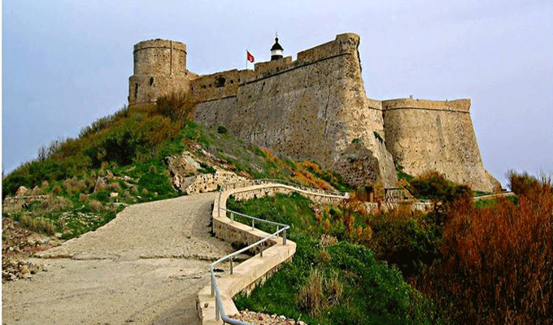
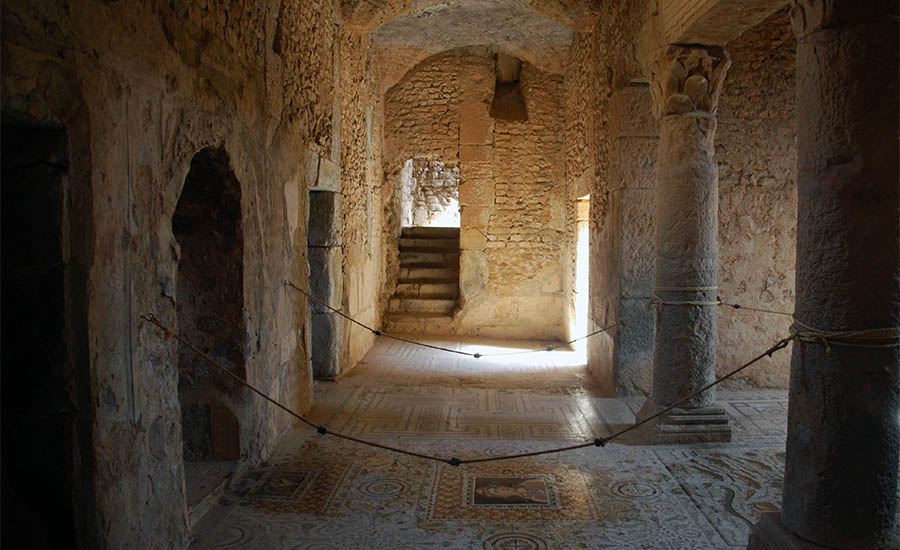
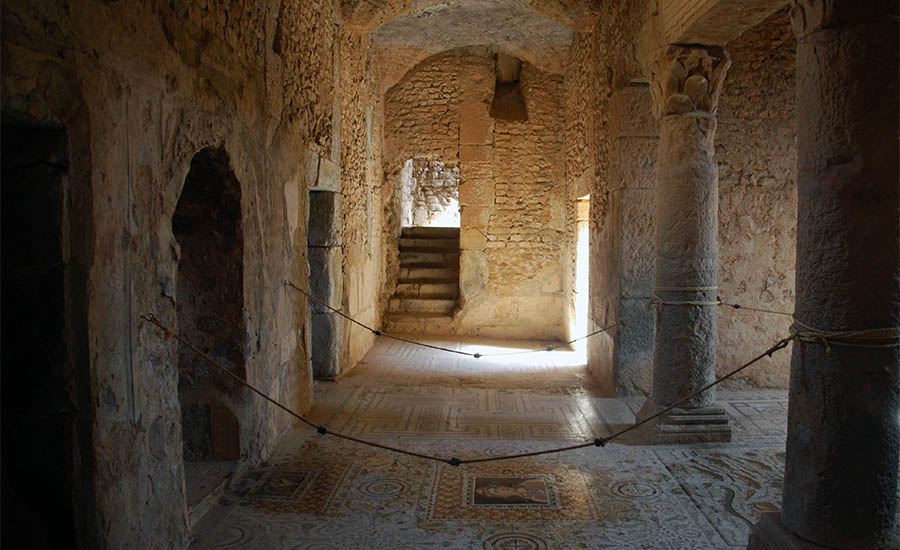

Welcome to Tabarka
Introduction
The small town of Tabarka is located in a natural site of great beauty. All around, pine forests, rocky coves and lookout points offering panoramic views over superb untouched landscapes. The old Genoese Fort faithfully watches over this small coastal town, its fishing harbour and its marina.
Genoese Fort
For those of you who appreciate extraordinary views, Genoese Fort certainly falls into this category. It is situated on its own island, which is accessed through an impressive 400m causeway. Unfortunately, little remains of the fort itself but as we’ve already highlighted, most people take to this attraction just for the incredible views that it presents.
 

Bulla Regia
Bulla Regia is about 65km away from Tabarka, but you can still comfortably accommodate it within a day trip. It’s one of the most prominent Roman sites in the country and contains everything from small baths and cisterns, to a whole theatre and various villas. A lot of the remains happen to be underground, with this being one of the principle methods of construction that the Romans used to deploy, meaning that this attraction really is one of a kind and just has to be visited by any history enthusiast.
 

La Galite Islands
Again, this next attraction isn’t strictly within Tabarka, but being just 60km off the coast of the area it is certainly within day-trip distance. These islands are rocky to say the least, but also happen to be largely uninhabited. What this means is that you can again bask in real, natural beauty, and also cast your eyes around various Romain remains that dot the land.